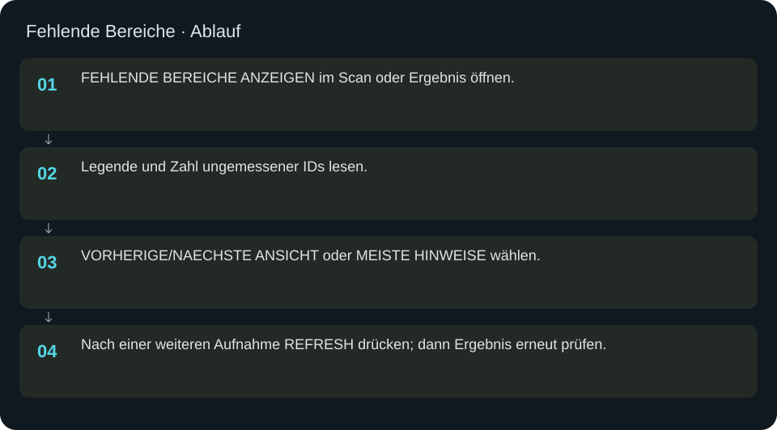
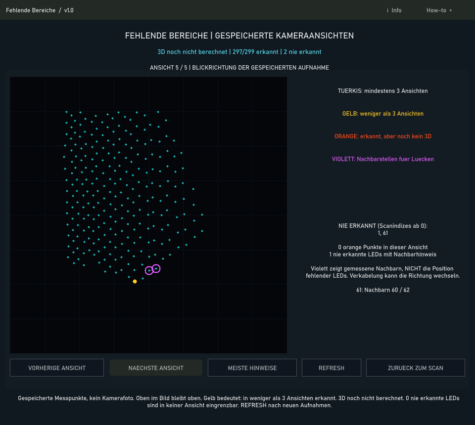

Fehlende Bereiche
Messabdeckung in gespeicherten Kameraansichten prüfen und einen gezielten nächsten Kamerablick planen.
In welcher Reihenfolge?
- FEHLENDE BEREICHE ANZEIGEN im Scan oder Ergebnis öffnen.
- Legende und Zahl ungemessener IDs lesen.
- VORHERIGE/NAECHSTE ANSICHT oder MEISTE HINWEISE wählen.
- Nach einer weiteren Aufnahme REFRESH drücken; dann Ergebnis erneut prüfen.


Schritt für Schritt
Legende
Türkis: 3D-Punkt mit mindestens drei Ansichten. Gelb: 3D-Punkt mit weniger als drei Ansichten. Orange: in 2D erkannt, aber noch kein 3D-Ergebnis. Violett: Nachbarstellen als Orientierung für Lücken. Diese Kategorien beschreiben die vorhandenen Messdaten, keine erfundenen Ersatzpositionen.
Beispiel
Bei drei fehlenden Panel-8-IDs die Ansicht mit den meisten Hinweisen öffnen. Sichtbare Nachbarstellen helfen beim nächsten Blickwinkel. Nie erkannte LEDs können in keiner Kameraansicht lokalisiert werden. Zusätzliche Aufnahme aus neuer Perspektive machen, danach REFRESH und neue Rekonstruktion prüfen.
Eingaben & Beispiele
Dieser Bildschirm benötigt für den beschriebenen Prüfablauf keine Texteingabe.
Woran erkenne ich Erfolg?
Die erwartete Ansicht öffnet, Status und Vorschau entsprechen der gewählten Aktion, und es erscheint kein Fehler. Änderungen beim nächsten Laden beziehungsweise im Live-Status erneut lesen. Ein erfolgreicher Bildschirmtest beweist weder physische LED-Ausgabe noch korrekte Kameramessung.
Quellennachweis
Dateipfade im Projekt-Repository; die Onlinehilfe gibt keinen allgemeinen Dateisystemzugriff frei.
pixelblaze_mapper/scan_coverage_visual_ui.pypixelblaze_mapper/scan_coverage_visual.py
Dialog: /project1/guided_scan/coverage_visual_panel